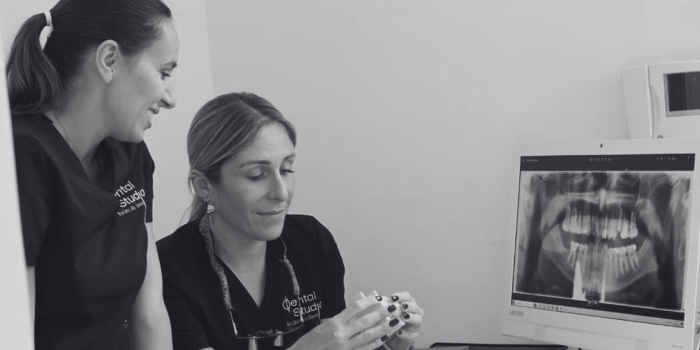

Filosofía
Transformamos la visita al dentista en una experiencia clara, calmada y sin juicios.

Sobre Dental Studio
Nuestra clínica nace con el objetivo de ofrecer una atención odontológica cercana, honesta y de alta calidad. Creemos que cada paciente es único y merece tiempo, escucha y un plan diseñado a medida.

Nuestro equipo
Nuestro equipo está formado por profesionales especializados en distintas áreas de la odontología. Trabajamos juntos para ofrecer soluciones completas, seguras y cómodas.


El alma de nuestra clínica
Combinamos la vanguardia tecnológica con el calor humano para que cada tratamiento sea técnicamente preciso y emocionalmente tranquilo.
Transformamos la visita al dentista en una experiencia clara, calmada y sin juicios.
Somos parte de Tenerife y cuidamos a nuestros vecinos con cercanía.
Tu salud es nuestra prioridad. Recomendamos solo lo que realmente necesitas.
Formación continua e inversión en tecnología para ofrecer soluciones innovadoras.
Información transparente, tratamientos claros y presupuestos sin sorpresas.
Una visión 360º de tu salud bucodental gracias a especialistas coordinados.
Santa Cruz de Tenerife
Queremos que la tranquilidad empiece desde que cruzas la puerta. Nuestro espacio combina luz, orden y materiales cálidos para acompañar una atención profesional y humana.